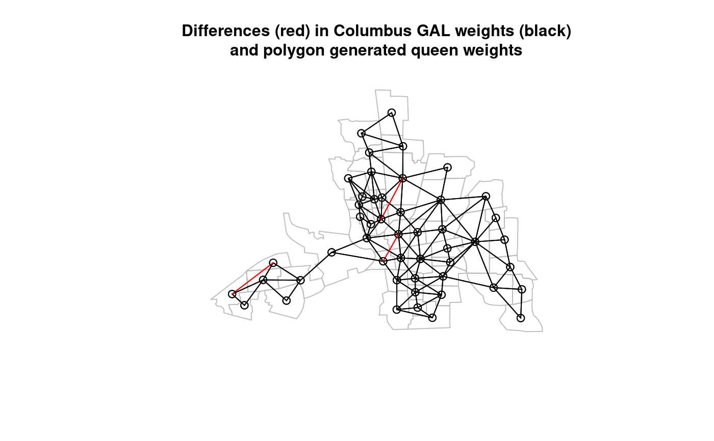
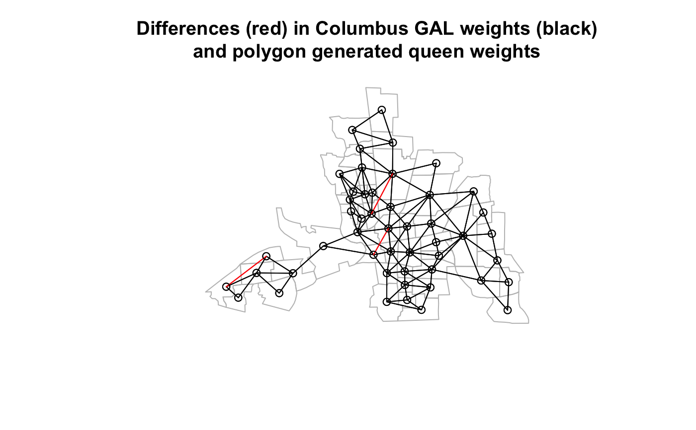
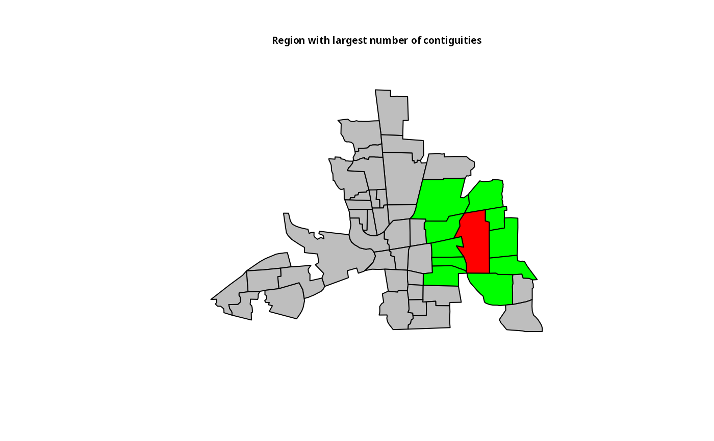
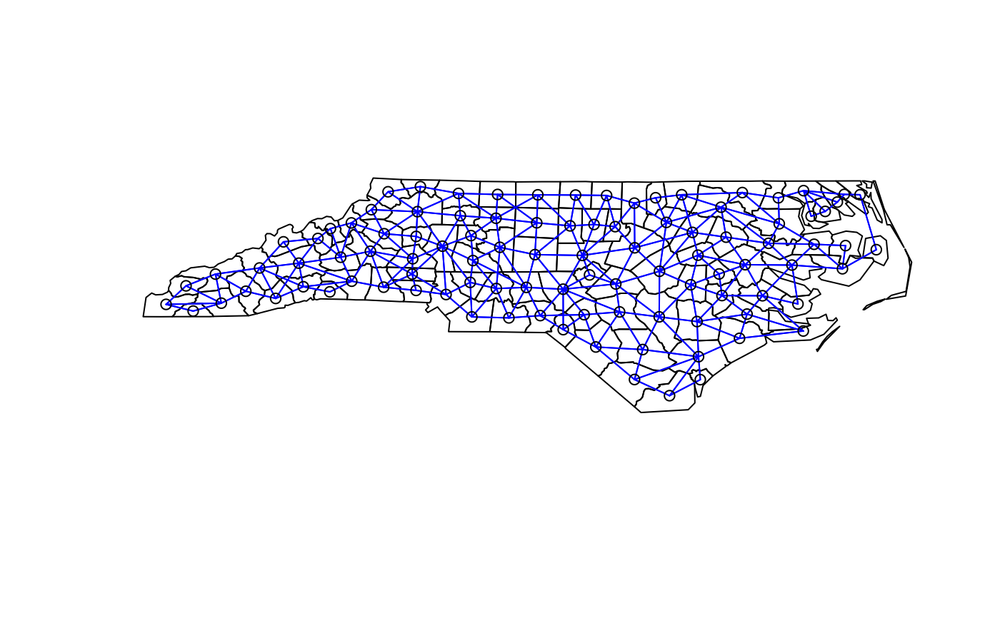

poly2nb.RdThe function builds a neighbours list based on regions with contiguous boundaries, that is sharing one or more boundary point. The current function is in part interpreted and may run slowly for many regions or detailed boundaries, but from 0.2-16 should not fail because of lack of memory when single polygons are built of very many border coordinates.
poly2nb(pl, row.names = NULL, snap=sqrt(.Machine$double.eps), queen=TRUE, useC=TRUE, foundInBox=NULL)
| pl | list of polygons of class extending |
|---|---|
| row.names | character vector of region ids to be added to the neighbours list as attribute |
| snap | boundary points less than |
| queen | if TRUE, a single shared boundary point meets the contiguity condition, if FALSE, more than one shared point is required; note that more than one shared boundary point does not necessarily mean a shared boundary line |
| useC | default TRUE, doing the work loop in C, may be set to false to revert to R code calling two C functions in an |
| foundInBox | default NULL using R code, possibly parallelised if a snow cluster is available, otherwise a list of length |
A neighbours list with class nb. See card for details of “nb” objects.
From 0.5-8, the function includes faster bounding box indexing and other improvements contributed by Micah Altman. If a cluster is provided using set.ClusterOption, it will be used for finding candidate bounding box overlaps for exact testing for contiguity.
columbus <- st_read(system.file("shapes/columbus.shp", package="spData")[1], quiet=TRUE) col.gal.nb <- read.gal(system.file("weights/columbus.gal", package="spData")[1]) coords <- st_coordinates(st_centroid(st_geometry(columbus))) xx <- poly2nb(as(columbus, "Spatial")) dxx <- diffnb(xx, col.gal.nb) plot(st_geometry(columbus), border="grey")title(main=paste("Differences (red) in Columbus GAL weights (black)", "and polygon generated queen weights", sep="\n"), cex.main=0.6)#> Neighbour list object: #> Number of regions: 49 #> Number of nonzero links: 0 #> Percentage nonzero weights: 0 #> Average number of links: 0 #> 49 regions with no links: #> 1 2 3 4 5 6 7 8 9 10 11 12 13 14 15 16 17 18 19 20 21 22 23 24 25 26 27 28 29 30 31 32 33 34 35 36 37 38 39 40 41 42 43 44 45 46 47 48 49#> Neighbour list object: #> Number of regions: 49 #> Number of nonzero links: 0 #> Percentage nonzero weights: 0 #> Average number of links: 0 #> 49 regions with no links: #> 1 2 3 4 5 6 7 8 9 10 11 12 13 14 15 16 17 18 19 20 21 22 23 24 25 26 27 28 29 30 31 32 33 34 35 36 37 38 39 40 41 42 43 44 45 46 47 48 49xxx <- poly2nb(as(columbus, "Spatial"), queen=FALSE) dxxx <- diffnb(xxx, col.gal.nb) plot(st_geometry(columbus), border = "grey")title(main=paste("Differences (red) in Columbus GAL weights (black)", "and polygon generated rook weights", sep="\n"), cex.main=0.6)cards <- card(xx) maxconts <- which(cards == max(cards)) if(length(maxconts) > 1) maxconts <- maxconts[1] fg <- rep("grey", length(cards)) fg[maxconts] <- "red" fg[xx[[maxconts]]] <- "green" plot(st_geometry(columbus), col=fg)nc.sids <- st_read(system.file("shapes/sids.shp", package="spData")[1], quiet=TRUE) system.time(xxnb <- poly2nb(as(nc.sids, "Spatial")))#> user system elapsed #> 0.036 0.000 0.036